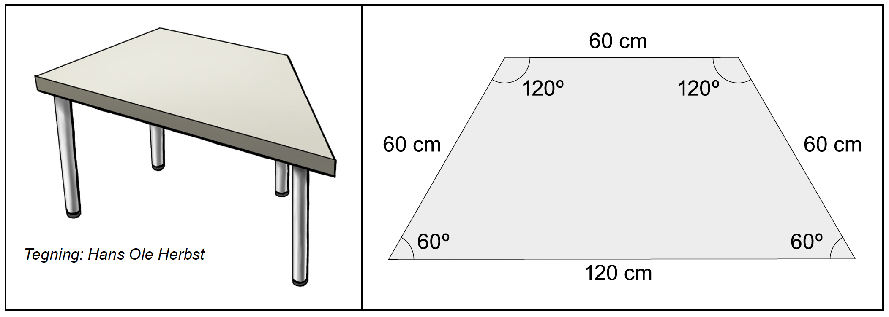
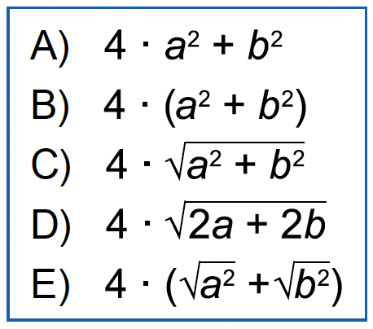

Matematik
Kl. 10.00-13.00
Prøven består af 7 opgaver. Du har 3 timer til at løse dem.
Ved hver opgave står der, hvor mange point den højst kan give. Prøven kan i alt højst give 65 point. Du bestemmer selv, hvilken rækkefølge du laver opgaverne i, og hvor lang tid du vil bruge på hver af dem.
Det er vigtigt, at du begrunder dine svar i alle opgaver.
Det betyder, at du i hver opgave skal vise eller forklare, hvordan du er nået frem til dit svar. Du kan fx begrunde dit svar med tekst, beregninger og/eller tegninger.
En del af de point, du kan få i hver opgave, kommer fra dine begrundelser. I de fleste opgaver kan du ikke få det højeste antal point, hvis du ikke begrunder dit svar, selv om dine resultater er rigtige.
I nogle af opgaverne skal du beregne et antal eller en størrelse. I andre opgaver skal du vise, hvordan du finder frem til et bestemt resultat eller afgøre, om en påstand er sand eller falsk.
Der er også opgaver, hvor du skal løse et matematisk problem ved at undersøge. I disse opgaver forventer vi ikke, at du på forhånd kender en metode, du kan bruge til at løse problemet. Ordet ’undersøg’ signalerer, at du selv skal finde på en god måde at løse problemet på ved at bruge matematik, du kender.
God arbejdslyst.
Styrelsen for Undervisning og Kvalitet
1
Leje af festlokale
Opgave 1 giver højst 11 point|
9. klasserne på en skole vil leje et lokale, hvor de kan holde fest.
Det koster 175 kr. pr. time at leje lokalet.
Rengøring efter festen koster 1500 kr.
Foto:
Opgavekommissionen i matematik
|
||
| 1.1 |
Hvor meget skal eleverne betale i alt for leje og rengøring, hvis de lejer
lokalet i 5 timer?
|
|
| 1.2 |
Hvor mange timer kan
eleverne leje
lokalet, hvis de har 3600 kr. til både leje og rengøring? Der er 45 elever i de to 9. klasser. Der kan altså højst komme 45 personer til festen. |
|
| 1.3 |
Hvad bliver prisen pr. person, hvis den
samlede pris for leje og rengøring bliver 3600 kr., og der kommer 45 personer
til festen?
|
|
| 1.4 |
Skriv et udtryk, der viser prisen pr. person, hvis 9. klasserne lejer lokalet i
t timer, og der kommer n personer til festen.
|
|
2
Krus til sodavand
Opgave 2 giver højst 11 point|
9. klasserne vil købe to forskellige størrelser krus, som de kan bruge til at
servere sodavand
i til deres fest. Eleverne kan fylde 0,3 L i det lille, blå krus og 0,5 L i det
store, røde krus.
Tegning: Hans Ole Herbst
|
||
| 2.1 |
Hvor mange små krus kan eleverne
fylde, hvis de har 1,5 L sodavand?
Et stort krus har form som en cylinder med en diameter på 7,0 cm. Eleverne kan fylde sodavand i kruset op til 13 centimeters højde. |
|
| 2.2 |
Du skal vise med beregning, at et stort krus kan rumme ca. 0,5 L.
9. klasserne beslutter, at et stort krus sodavand skal koste 15 kr. |
|
| 2.3 |
Hvor meget skal et lille krus sodavand koste, hvis literprisen skal være den
samme, uanset om man køber et lille eller et stort krus sodavand?
9. klasserne vil købe så mange krus, at de tilsammen kan rumme 130 L. Til en klassefest sidste år blev der solgt flere store krus end små krus, så de vil købe dobbelt så mange store krus som små krus. |
|
| 2.4 |
Undersøg, hvor mange krus af hver størrelse eleverne skal købe.
|
|
3
Mad til festen
Opgave 3 giver højst 6 point|
9. klasserne vil købe mad til deres fest.
De har fundet priser fra tre forskellige firmaer, der kan lave mad til festen.  Foto:
Colourbox
Foto:
Colourbox
|
||
9. klasserne regner med, at der kommer mellem 25 og 45 personer til festen. |
||
| 3.1 |
Hvor mange personer skal der komme til festen, for at det bliver billigst at
vælge
• firma A? • firma B? • firma C? |
|
4
Bordopstilling
Opgave 4 giver højst 8 point|
I det festlokale, 9. klasserne vil leje, er der mange ens borde. Eleverne kan se
to tegninger af et af bordene på festlokalets hjemmeside.
 |
||
|
Der kan sidde personer hele vejen rundt
om bordene. Hver person skal have
60 cm plads.
4.1
Hvor mange personer kan der sidde ved
tre borde, hvis bordene står, som skitse 1 viser?
|
||
|
9. klasserne vil købe duge til bordene, og
derfor skal de vide, hvor brede bordene er.
4.2
Hvor stor er bredden, b, der er vist med
et rødt linjestykke på skitse 2?
|
||
|
Silje foreslår, at bordene skal stå 6 og 6, så
bordenes parallelle sider danner to regulære
sekskanter, når man ser dem fra oven.
Se skitse 3.
4.3
Undersøg, om denne bordopstilling er
mulig med de vinkler og sidelængder, bordene har.
|
||
5
Quiz
Opgave 5 giver højst 10 point
Til festen stod Laura og Silje for en quiz, hvor hver elev kunne score fra 0 til 20
point. Tabellen og diagrammet viser, hvor mange point eleverne fra 9. A scorede i
quizzen. Tabellen og diagrammet er også i filen QUIZ_MAJ_2024.

|
|
| 5.1 |
Hvor mange elever fra 9. A scorede 17 eller flere point?
|
| 5.2 |
Du skal vise med beregning, at eleverne i 9. A i gennemsnit scorede 15 point.
Silje påstår, at tallet 15 altid vil være i et datasæt, der har gennemsnittet 15. |
| 5.3 |
Har Silje ret?
I quizzen deltog også 18 elever fra 9. B, som i gennemsnit scorede 16 point. To af eleverne scorede endda 20 point. |
| 5.4 |
Tegn et søjlediagram, der viser, hvordan fordelingen af antal point i 9. B kan
se ud. Brug evt. filen QUIZ_MAJ_2024.
|
6
Rombers areal og omkreds
Opgave 6 giver højst 11 point|
Skitsen herunder viser romben A og dens to diagonaler.
Den ene diagonal har længden 10. Den anden har længden 24. En rombe er en firkant med fire lige lange sider.
Diagonalerne i en rombe skærer hinanden vinkelret på midten.
|
||
| 6.1 |
Hvor stort er arealet af romben A?
|
|
| 6.2 |
Hvor stor er omkredsen af romben A?
Tegningen herunder viser en vilkårlig rombe og dens to diagonaler. |
|
| 6.3 |
Skriv et udtryk, man kan bruge til at beregne arealet af en vilkårlig rombe, når
diagonalernes længder er 2a og 2b.
|
|
|
6.4
Forklar, hvilket eller hvilke af de fem udtryk i den blå ramme der
beskriver en vilkårlig rombes omkreds, når diagonalernes
længder er 2a og 2b.

|
||
7
Sum på 100
Opgave 7 giver højst 8 point|
Silje, Malte, Esther og Frida har arbejdet med en opgave, hvor man skal indsætte hele
tal større end 0 i den røde og den blå firkant, så summen bliver 100.
De har sammen fundet løsningen herunder. Desuden påstår hver af de fire, at de har fundet ud af noget om opgaven. Tegning: Hans Ole Herbst |
|
| 7.1 |
Undersøg hver af de fire elevers påstande. Du skal forklare, hvorfor hver påstand er
sand eller falsk.
|
Det følgende er ikke en del af prøven:
Dette prøvesæt er omfattet af ophavsretten, jf. ophavsretslovens § 1.
Prøvesættet må alene anvendes til den på prøvesættet anførte prøve.
Al anden anvendelse af prøvesættet, herunder visning eller deling f.eks. via
internettet, sociale medier, portaler og bøger, udgør en krænkelse af Børne- og
Undervisningsministeriets og evt. tredjemands ophavsret og er ikke tilladt.
Overtrædelse af ophavsretten kan være erstatningspådragende og/eller strafbart.
Prøvesættet kan dog, efter at prøven er afsluttet, anvendes til undervisningsbrug på
uddannelser m.v. omfattet af den lovgivning, som Styrelsen for Undervisning og Kvalitet
administrerer.